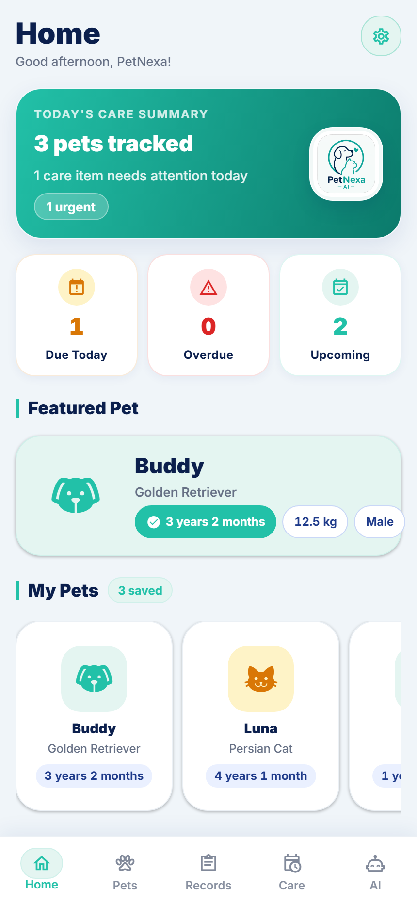
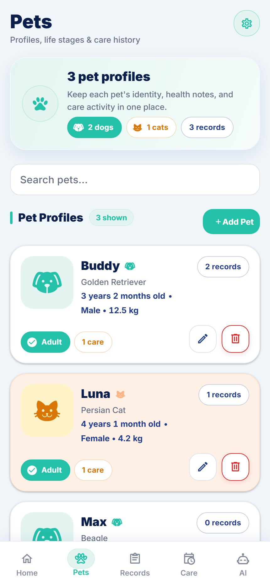
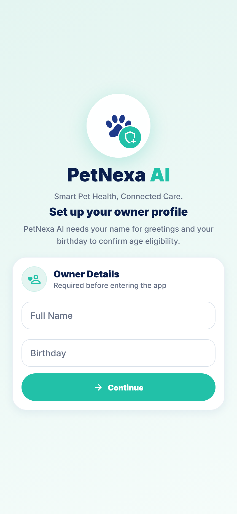
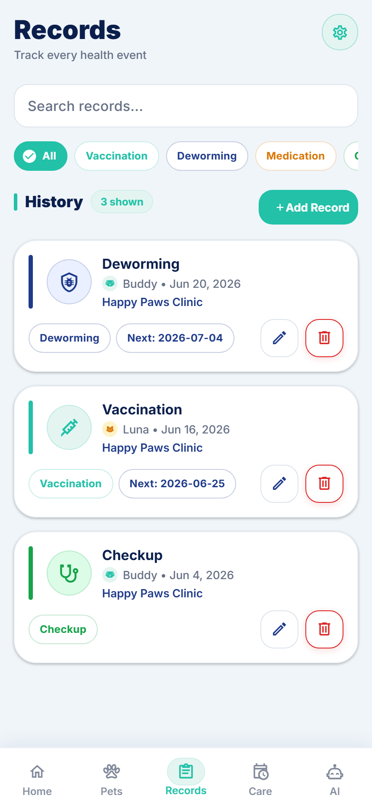
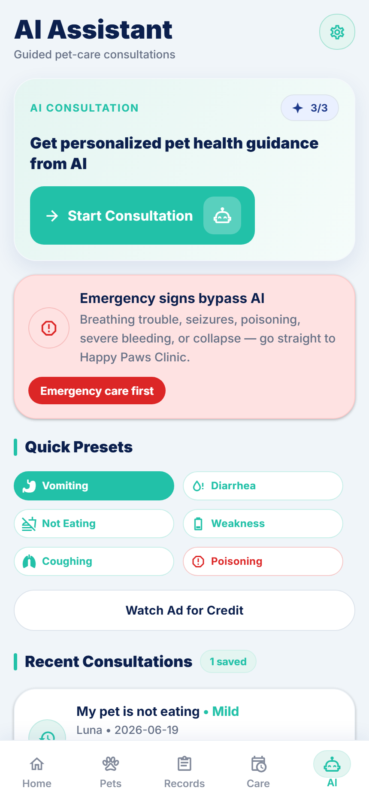
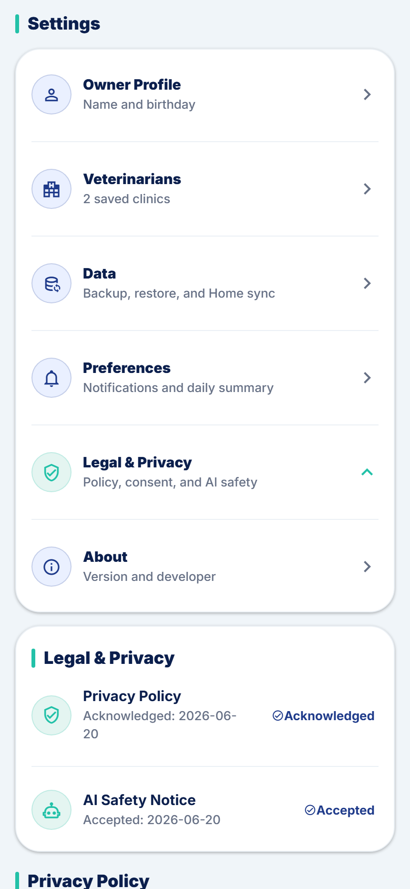

A mobile care companion for pet profiles, health records, reminders,
Home sync, and safety-first AI guidance, backed by a clear privacy
policy and user-controlled data choices.
Local-first careSolo profiles, records, reminders, and backups stay on the device by default.Shared Home syncCloud storage is used only when a family Home workflow needs shared access.Safety-first AISymptom guidance stays informational and never replaces veterinary care.Visible controlsExport, restore, diagnostics, consent, and delete tools remain easy to find.

Demo previewSample content only. No real owner, pet, or health data is shown.
Policy summary
Designed to show the app and explain the data clearly.
PetNexa AI is built around practical pet-care workflows. This privacy
center explains what stays local, what can be synced, and which optional
online services are used when features need them.
01
Default privacy posture
PetNexa AI stores care data locally unless Home sync, AI consultation, sharing, or ads are used.
02
User controls
Settings includes export, import, sync status, diagnostics export, local data deletion, and legal acknowledgements.
03
Opt-in signals
Analytics, local diagnostics, and personalized ads are separate controls and are off unless enabled.
Product preview
A polished mobile experience for daily pet care.
Screenshots are captured from the current Expo web app using sample data,
so families can understand the product without exposing private pet records.

Pet profiles stay organizedReadable cards, care badges, age, weight, gender, records, and quick actions are structured for mobile use.
Care dashboard
See featured pets, reminders, saved profiles, and care status from the first tab.
Record timeline
Track checkups, vaccinations, deworming, schedules, notes, and clinic details.
AI assistant
Use structured symptom prompts with safety reminders before seeking professional care.
Privacy controls
Review policy status, AI safety consent, data tools, and local privacy choices in Settings.

OnboardingOwner setup before choosing local or Home care mode.
DashboardCare summary, featured pet, and key reminders.

RecordsHealth history, schedules, and related care notes.

AI AssistantStructured symptom entry with safety-focused guidance.

Privacy ControlsLegal acknowledgements, data export, and deletion tools.
1. Who we are
PetNexa AI is a pet health and care companion for tracking pet profiles,
veterinary records, care reminders, veterinarian contacts, optional Home
Furparent sync, and AI-assisted symptom guidance.
PetNexa AI is independently developed and maintained by
Dahon. The app is designed to be
local-first. Internet access is mainly used for optional Home Furparent
sync, account sign-in, AI consultation requests, rewarded ads, and related
service reliability.
2. What data PetNexa AI handles
Owner profile and settings
The app stores owner name, birthday, care mode, notification settings,
daily summary time, Home account identifiers, sync status, and app
preference details such as privacy acknowledgement, AI disclaimer
acknowledgement, analytics preference, diagnostics preference, and ad
personalization consent.
Pet profiles
PetNexa AI stores pet names, species, breed, sex, birthday, weight,
color, optional microchip number, notes, assigned veterinarian details,
and optional profile photos.
Veterinary records and reminders
Health records may include record type, date, clinic, veterinarian
text, notes, next schedule date, and optional attachment images. Care
reminders include titles, due dates, completion status, linked records,
and notes.
Veterinarian contacts
Saved contacts may include clinic name, veterinarian name, phone
number, email, address, website, emergency hotline, hours, notes, and
primary-clinic status.
AI consultation details
Consultations can include selected pet context, symptom preset,
description, appetite, water intake, behavior changes, duration,
frequency, energy or mobility, breathing status, injury or warning
signs, notes, risk level, emergency flags, and generated guidance.
Technical and service data
PetNexa AI and integrated services may process install identifiers,
app-open timestamps, Supabase authentication session data, Google OAuth
profile basics when sign-in is used, ad interaction signals, optional
local diagnostics, and service request metadata.
3. How data is used
To operate pet profiles, care reminders, health records, and veterinarian contact features.
To provide offline-first storage and backup or restore features on the user's device.
To schedule local care notifications when notification access is enabled.
To support optional Home Furparent sync across approved home members.
To upload pet profile photos and health-record attachments only when Home sync needs cloud asset storage.
To submit AI consultation context through the app's backend/API proxy when online AI guidance is requested.
To manage AI credits, rewarded-ad credit claims, weekly ad limits, and service reliability.
To detect emergency warning signs locally before AI is used and to show safety guidance.
4. Local and cloud storage
In Solo mode, PetNexa AI stores app data locally on the device. Native
builds use local SQLite storage, while the web build uses browser-backed
storage. Certain install and authentication values may use secure device
storage where supported.
When Home Furparent sync is enabled, synced pet, record, reminder, and
veterinarian data is stored in Supabase database tables for the selected
Home account. Pet and record images may be uploaded to a private Supabase
Storage bucket and accessed through short-lived signed URLs.
Backup and restore features are local file flows. Current portable JSON
backups can include the app snapshot and readable local pet or record
images when the device allows access. Backup files remain under the user's
control and should be shared only with trusted people.
5. AI, ads, and third-party services
Supabase
PetNexa AI uses Supabase for optional Home Furparent authentication,
database sync, private storage for synced images, and the backend or
Edge Function path used by AI consultations.
Google sign-in and email OTP
Home Furparent accounts can use Supabase Auth with email OTP or Google
OAuth. Google sign-in can process basic account profile information
such as email and profile identity needed for authentication.
Google Gemini and Groq
When online AI guidance is requested, consultation context may be sent
through the app's backend to Google Gemini or Groq-hosted AI models.
The app asks these services for non-diagnostic, safety-constrained pet
care guidance.
Google Mobile Ads
PetNexa AI uses Google Mobile Ads for rewarded ads that can grant
weekly AI credits. Personalized ads are controlled separately from app
usage. Google's SDK and systems may process ad interaction data,
identifiers, diagnostics, and approximate technical context according to
Google's advertising policies and the user's platform settings.
Local diagnostics
Diagnostics are off by default. When enabled, failed sync or import
events are stored locally on the device until the user exports or clears
them. PetNexa AI does not automatically upload these diagnostic logs.
6. Device permissions
Camera access is requested only when taking a pet profile photo or health-record attachment.
Photo library access is used when selecting an existing profile photo or record attachment.
Notification permission is used to schedule local care reminders when supported by the platform.
Network access is used for Home sync, authentication, AI requests, and rewarded ads.
Ad tracking or ad personalization prompts may appear only when required by the platform or advertising setup.
7. How long data is retained
Local profile, pet, record, reminder, consultation, and settings data remains on the device until the user edits it, deletes it, restores over it, clears app data, or uninstalls the app.
Home Furparent cloud records remain in Supabase until removed through app flows or backend administration. Deleted synced items may be marked with deletion metadata before being removed or ignored by sync.
Synced images in Supabase Storage may remain until the related Home data or storage path is removed.
AI request content and ad-related data may be retained by backend providers according to their operational, security, and legal requirements.
Local diagnostic events remain on the device until the user exports, clears, deletes local data, or uninstalls the app.
Backup files exported by the user remain wherever the user saves or shares them.
8. Your controls and limitations
Users can manage most local data directly inside the app by editing or
deleting pets, records, reminders, veterinarian contacts, consultations, or
by replacing local data through restore. Users can also uninstall the app or
clear app data through their device settings.
Home Furparent owners can delete a Home account in the app when ownership
checks pass. Users can sign out of Home sync to stop further sync on the
device.
The Settings screen includes separate controls for notifications,
analytics, personalized ads, local diagnostics, privacy acknowledgement, AI
safety acknowledgement, and deleting local device data. Deleting local
device data does not automatically delete a Home cloud account.
AI credits, rewarded-ad state, authentication records, provider logs, and
abuse-prevention or service-reliability records may not be fully removable
through local delete actions.
9. Security practices
PetNexa AI uses encrypted network connections for supported Supabase, AI,
authentication, and ad-related requests. Home sync uses Supabase access
controls so Home data is limited to authenticated members of that Home.
Private image assets are accessed with signed URLs.
Diagnostics stay local unless exported by the user. Portable backups may
contain sensitive records and images, so users should store and share backup
files carefully.
No digital system can guarantee absolute security, but reasonable technical
measures are used to protect data in transit, reduce unauthorized access,
and keep local-first features available without unnecessary uploads.
10. Children and pet-care safety
PetNexa AI is intended for pet owners and caretakers who are old enough to
manage pet health records. The app includes an owner age requirement and is
not designed as a general children's app for young children.
PetNexa AI does not replace veterinary care. AI guidance is informational
only and should not be used as a diagnosis, prescription, medication dosage,
or substitute for a licensed veterinarian.
11. Privacy contact
If you have privacy questions about PetNexa AI, contact: